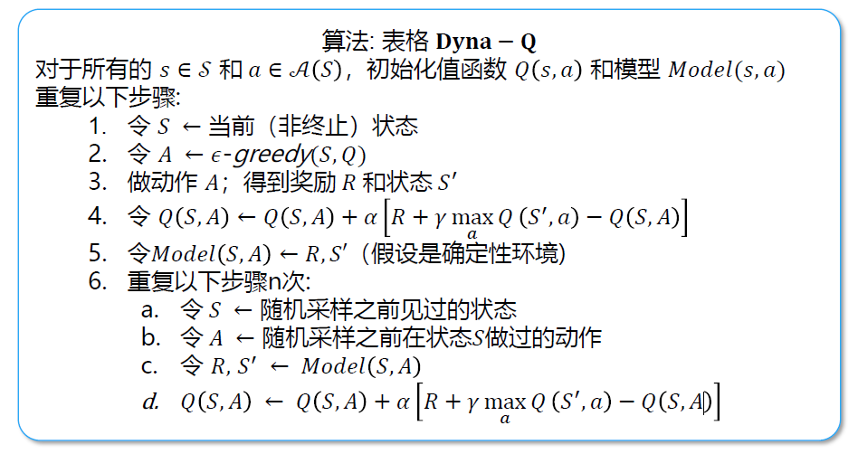

learning by planing
入门算法与介绍
模型是什么
给定一个状态和动作，模型能够预测下一个状态和奖励的分布，即$P(s',r|s,a)$
- s, a：给定的状态和动作
- s', r：下一个状态和奖励
模型的分类：分布模型（distribution model，类似于白盒模型）、样本模型（sample model，黑盒模型）
以掷骰子为例：分布模型指的是得到骰子数字总和的所有可能性及其概率；样本模型之采样得到一种骰子的数字综合
模型的作用：得到模拟的经验数据（simulated experiences）
规划是什么
规划 planning
输入一个模型，输出一个策略的搜索过程
- 状态空间的规划 state-space planning
- 规划空间的规划 plan-space planning
规划的通用框架
模型→模拟经验→值函数→策略
规划的好处
- 任何时间点都可以被打断或重定向
- 复杂问题下进行小而增量式的时间步规划是很有效的
规划和学习
不同点：规划用模型产生的模拟经验；学习用环境产生的真实经验
相同点：通过回溯更新值函数估计；学习的方法可以用在模拟经验上
Dyna 算法
集成规划、决策和学习的算法
- 更新模型
- 模型学习或间接强化学习
- 对经验数据的需求少
- 更新值函数和策略
- 直接强化学习
- 简单不受模型偏差的影响
Dyna 算法框架
- 和环境交互产生真实经验
- 直接强化学习更新函数策略
- 使用真实经验更新模型
- 基于模型随机采样得到模拟经验
- 使用模拟经验做规划更新值函数和策略

对于比较简单的环境，进行 planing 后模型能收敛更快。
模型不准了怎么办？
- 环境是随机的，并且之观察了有限的样本
- 模型使用了泛化性不好的函数估计
- 环境改变了，并且还没有被算法检测到
采样方法
优先级采样
常见的采样方法：均匀随机采样；模拟的经验和更新应集中在一些特殊的状态动作
更好的采样方法：
- 后向聚焦 backward focusing：很多状态的值发生变化带动前继状态的值发生变化
- 有的值改变多，有的改变少
优先级采样
- 设置优先级更新队列
根据值改变的幅度定义优先级 $𝑃 ← |𝑅 + 𝛾\max_𝑎𝑄(S′,a)−𝑄(𝑆,𝐴)|$
局限性及改进
随机环境种利用期望更新的方法，会可能浪费很多计算资源在一些低概率的状态转移上
改进：引入采样更新
期望更新和采样更新
值函数 $V(s)=\mathbb E_{a\sim\pi(s)}[Q(s,a)]$
动作值函数 $Q(s,a)$
期望更新 $Q(s,a)\leftarrow\sum_{s',r}\hat p(s',r|s,a)[r+\gamma\max_{a'}Q(s',a')]$
- 需要分布模型
- 需要更大的计算量
- 没有偏差更准确
采样更新 $Q(s,a)\leftarrow Q(s,a)+\alpha[r+\gamma\max_{a'}Q(s',a')-Q(s,a)]$
- 只需要采样模型
- 计算量需求更低
- 受到采样误差(sampling error)的影响
不同分支因子下的表现
假设
- b 个后续状态等可能
- 初始估计误差为 1
- 下一个状态值假设估计正确
结果
- 分支因子越多，采样更新越接近期望更新
- 大的随机分支银子和状态数量较多的情况下，采样更新更好
所以环境越复杂越应该用采样更新而不是期望更新
轨迹采样
对比动态规划：对整个状态空间进行遍历，没有侧装实际需要关注的状态上
在状态空间种按照特定分布采样：根据当下策略所关测的分布进行采样
轨迹采样的状态转移和奖励由模型决定；动作由当前的策略决定
轨迹采样的优缺点
优点
- 不需要指导当前策略下状态的分布
- 计算量少，简单有效
缺点
- 不断重复更新已经被访问的状态
决策时规划
实时动态规划
和传统动态规划的区别
- 实时的轨迹采样
- 只更新轨迹访问的状态值
优势
- 跳过策略无关的状态
- 解决状态集合规模大的问题上具有优势
- 满足一定条件下可以以概率 1 收敛到最优策略
决策时规划
背景规划 background planning
- 规划是为了更新很多状态值供后续动作的选择
决策时规划 decision-time planning
- 只着眼于当前状态的动作选择
- 在不需要快速反应的应用种很有效，比如棋类游戏
启发式搜索
- 访问当前状态，对后续可能的情况进行树结构展开
- 叶节点代表估计的值函数
- 回溯到当前状态，方式类似于值函数的更新方式
启发式搜索就可以使用决策时规划
贪婪策略在单步情况下的扩栈
搜索越深，计算量越大，得到的动作越接近最有
性能提升不是源于多步更新，而是源于专注当前状态的后续可能
Rollout 算法
- 从当前状态进行模拟的蒙特卡洛估计
- 选取最高估计值的动作
- 在下一个状态重复上述步骤
特点
- 决策时规划，从当前状态进行 rollout
- 直接目的类似于策略迭代和改进，寻找更优的策略
- 表现取决于蒙特卡洛方法估值的准确性
Rollout 算法的加速方法
- 多处理器进行并行采样
- 轨迹截断，用存储的值估计代替回报
- 剔除不可能称为最佳动作的动作（剪枝）
蒙特卡洛树搜索
选择、扩展、模拟、回溯